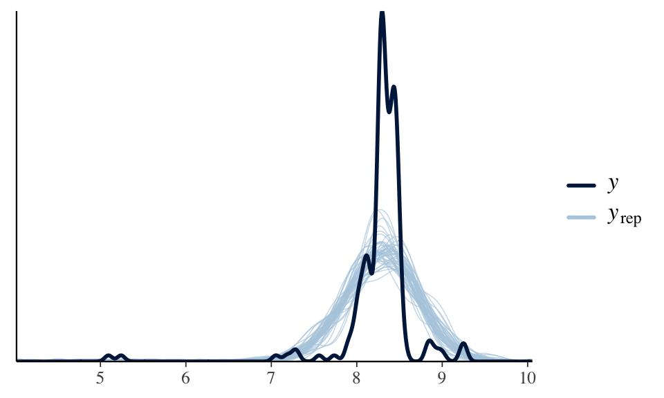
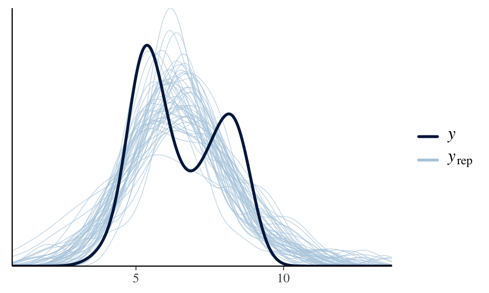

library(ggplot2)
library(bayesrules)
library(tidyverse)
library(dplyr)
library(rstanarm)
library(broom.mixed)
library(tidybayes)
library(bayesplot)
library(readr)
#astronauts <- readr::read_csv('https://raw.githubusercontent.com/rfordatascience/tidytuesday/master/data/2020/2020-07-14/astronauts.csv')
astronauts <- read_csv("astronauts.csv")
log_transformed_astronauts <- read_csv("cleaned_data.csv")STAT 454 Final Project Report Part 2
In the part 2 of the report, we will explore the bimodality phenomenon in the posterior predictive check density curve. Below, we tackled the task by creating models for each in-orbit spacecraft group.
Set up
Addition model of each in_orbit groups
astronauts %>%
count(in_orbit, sort = TRUE)
## # A tibble: 289 × 2
## in_orbit n
## <chr> <int>
## 1 ISS 174
## 2 Mir 71
## 3 Salyut 6 24
## 4 Salyut 7 24
## 5 STS-42 8
## 6 STS-103 7
## 7 STS-107 7
## 8 STS-109 7
## 9 STS-110 7
## 10 STS-114 7
## # ℹ 279 more rowsConsidering the number of data we have for each in_orbit group, we will only model the group that have data above 50
ISS
# Subset the dataset to include only rows where in_orbit is "ISS"
ISS_data <- log_transformed_astronauts[log_transformed_astronauts$in_orbit == "ISS", ]# model_ISS <- stan_glm(
# log_hours_mission ~ 1 + field21 + occupation + total_number_of_missions + year_of_selection, data = ISS_data,
# family = gaussian,
# chains = 4, iter = 5000*2, seed = 84735, refresh = 0)
# saveRDS(model_ISS, "model_ISS.rds")model_ISS <- readRDS("../models/model_ISS.rds")
pp_check(model_ISS)
Mir
Mir_data <- log_transformed_astronauts[log_transformed_astronauts$in_orbit == "Mir", ]# model_Mir <- stan_glm(
# log_hours_mission ~ 1 + field21 + occupation + total_number_of_missions + year_of_selection, data = Mir_data,
# family = gaussian,
# chains = 4, iter = 5000*2, seed = 84735, refresh = 0)
# saveRDS(model_Mir, "../models/model_Mir.rds")model_Mir <- readRDS("../models/model_Mir.rds")
pp_check(model_Mir)Salyut
# Salyut_data <- log_transformed_astronauts[log_transformed_astronauts$in_orbit == "Salyut", ]
#
# model_Salyut <- stan_glm(
# log_hours_mission ~ 1 + field21 + occupation + total_number_of_missions + year_of_selection, data =Salyut_data,
# family = gaussian,
# chains = 4, iter = 5000*2, seed = 84735, refresh = 0)
# pp_check(model_Salyut)
# saveRDS(model_Salyut, "../models/model_Salyut.rds")model_Salyut <- readRDS("../models/model_Salyut.rds")
pp_check(model_Salyut)
Soyuz
# Soyuz_data <- log_transformed_astronauts[log_transformed_astronauts$in_orbit == "Soyuz", ]
#
#
# model_Soyuz <- stan_glm(
# log_hours_mission ~1 + field21 + occupation + total_number_of_missions + year_of_selection, data =Soyuz_data,
# family = gaussian,
# chains = 4, iter = 5000*2, seed = 84735, refresh = 0)
# pp_check(model_Soyuz)
# saveRDS(model_Soyuz, "../models/model_Soyuz.rds")model_Soyuz <- readRDS("../models/model_Soyuz.rds")
pp_check(model_Soyuz)STS
STS_data <- log_transformed_astronauts[log_transformed_astronauts$in_orbit == "STS", ]
model_STS <- stan_glm(
log_hours_mission ~ 1 + field21 + occupation + total_number_of_missions + year_of_selection, data =STS_data,
family = gaussian,
chains = 4, iter = 5000*2, seed = 84735, refresh = 0)
saveRDS(model_STS, "../models/model_STS.rds")model_STS <- readRDS("../models/model_STS.rds")
pp_check(model_STS)tidy(model_STS, conf.int = TRUE, conf.level = 0.8)
## # A tibble: 8 × 5
## term estimate std.error conf.low conf.high
## <chr> <dbl> <dbl> <dbl> <dbl>
## 1 (Intercept) -50.9 3.28 -55.0 -46.7
## 2 field21 0.0395 0.0161 0.0187 0.0601
## 3 occupationflight engineer -0.00293 0.151 -0.196 0.192
## 4 occupationmsp -0.0690 0.0378 -0.117 -0.0206
## 5 occupationpilot -0.140 0.0444 -0.196 -0.0827
## 6 occupationpsp -0.0724 0.0617 -0.151 0.00705
## 7 total_number_of_missions 0.0123 0.0104 -0.00101 0.0254
## 8 year_of_selection 0.0283 0.00165 0.0262 0.0304
set.seed(84735)
prediction_summary(model = model_STS, data =STS_data)
## mae mae_scaled within_50 within_95
## 1 0.1598808 0.4427018 0.6442432 0.9547219The mean absolute error is relatively low, indicating that on average, the predicted log hours of missions deviate from the actual by a small amount.
Model Analysis:
From the posterior predictive checks only the STS model showed a great fit, thus the following analysis will be only focusing on the STS model. Factors that effected other models performance might be the insufficient data, since STS has a greater amount of data comparing to others.
For the peak of the observed data (Y) aligns well with the center of the posterior predictive distributions. This indicates that the model effectively captures the central tendency (mean) of the observed data, suggesting a good fit in terms of the average mission hours for STS missions. The posterior predictive distributions appear to capture the spread of the observed data reasonably well, though there is some variability in the tails of the distributions.
Coefficients Interpretation of STS model:
- Intercept (5.40485409): This represents the baseline log hours of mission for STS astronauts, with all other predictors held constant.
- Field21 (0.03365027): Every instances of extravehicular activities during the mission increase leads to an approximate increase of 0.03365 in the log hours, suggesting a positive influence on mission duration.
- Occupation: Different occupations have differing impacts on mission duration. For example:
- Flight Engineer (-0.06782086): Flight engineers have slightly lower mission hours compared to the baseline occupation.
- MSP (-0.09444165) and Pilot (-0.14960477): Both occupations significantly reduce the mission hours, with pilots showing a more substantial decrease.
- PSP (-0.08734932): Similar to MSPs, PSPs also have a reduction in mission hours, though the upper confidence interval nearly touches zero, indicating less certainty about the decrease.
- Total Number of Missions (0.02255374): Each additional mission an astronaut undertakes is associated with a slight increase in the log hours of their missions.
- Year of Selection: The coefficients show varying impacts on mission hours depending on the year of selection. Notably:
- 1962 (-0.79800872) and 1979 (-1.04133814): Selection in these years significantly decreases mission hours.
- 1991 (0.60011919) and 1999 (0.46810752): Selection in these years increases mission hours, with 1991 showing a substantial positive effect.
Conclusion of STS
The analysis of the STS model, focusing on the relationship between various predictors and the log-transformed hours of mission for STS astronauts, provides revelations about the dynamics of space missions over time. The findings indicate clear patterns and variations in mission duration that are significantly influenced by factors such as the astronaut’s occupation, the total number of missions they have undertaken, and particularly the year of their selection.
Key Finds:
- Occupational Impact: Different roles within the astronaut population, such as pilots, flight engineers, and mission specialists, demonstrate distinct impacts on mission duration. Notably, pilots and mission specialists tend to have shorter mission duration compared to other roles.
- Influence of Experience: The positive correlation between the total number of missions and mission duration suggests that more experienced astronauts tend to have longer missions, potentially due to their involvement in more complex or extended missions.
- Temporal Variations: The coefficients associated with the years of selection underscore significant changes over time, possibly reflecting shifts in mission objectives, technology, or operational strategies. This timeline of variations may correspond with the Cold War era and post-Cold War adjustments, reflecting how geopolitical tensions and subsequent cooperation influenced space exploration goals and astronaut training. For instance, the decrease in mission hours for selections in 1962 (-0.798) and 1979 (-1.041) reflect the intense periods of the Cold War where mission strategies were more conservative and risk-averse. Conversely, the increase in mission duration in 1991 (0.600) and 1999 (0.468) corresponds with the post-Cold War era, where there have been a shift towards more ambitious and prolonged missions as geopolitical tensions eased.